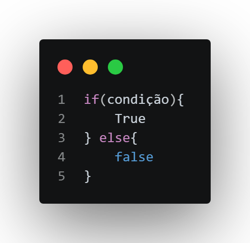
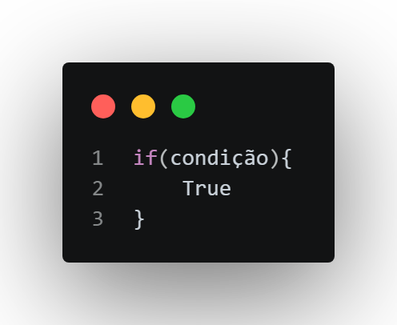
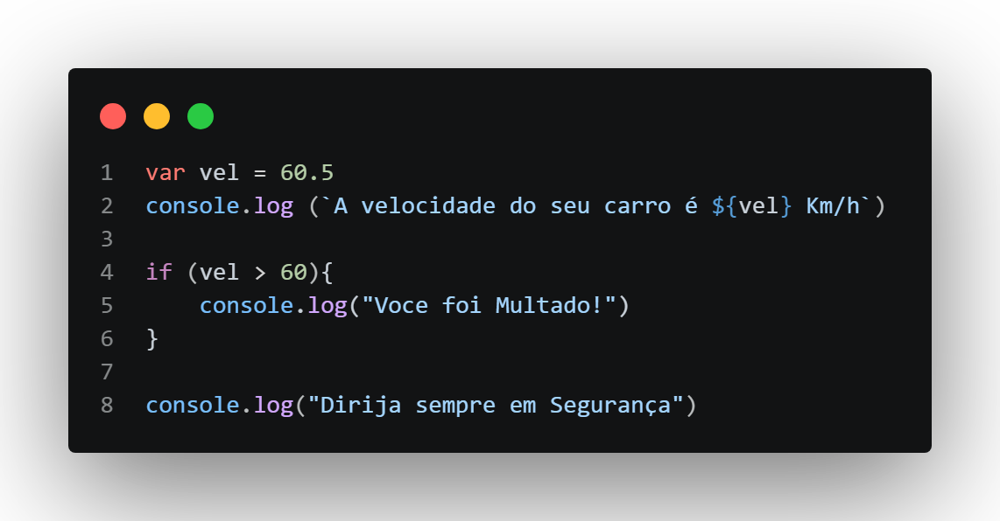
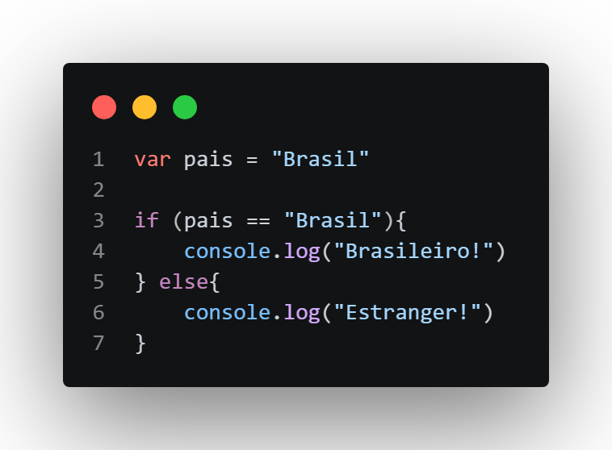
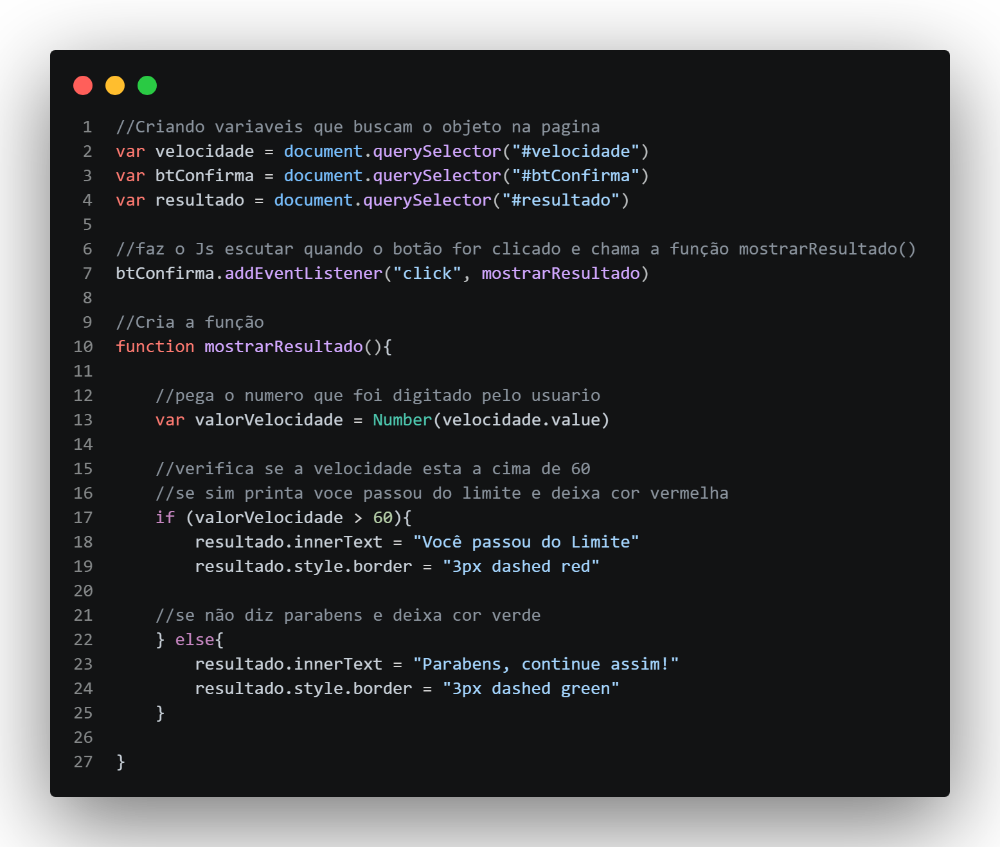

Condições em JavaScrip
Antes de entendermos as Condições,devemos nos lembrar das sequencias que o Js segue, por exemplo:
temos a variavel n que recebe o numero 3
var n = 3
ai pegamos n e adicionamos mais 2
n += 2
ao chamar no console a variavel n sabemos que ela nos retornará 5 e não 3 como era no inicio, mais por que isso?
por conta da sequencia que o Js segue ao ler um codigo, é impossivel executar o primeiro comando e depois o ultimo, MAS pode ser que haja momentos em que queiramos executar o primeiro comando e depois o terceiro, ai como fazemos isso?
então chegou a hora de aprender as condições...
As condições funcionam da seguinte forma, quando criamos um codigo, ao inves de fazer o usuario seguir a sequencia de comandos, podemos fazer uma "bifurcação" no caminho, dizendo "Se acontecer A faça isso, se acontecer B faça aquilo" , então basicamente não seguimos uma via vertical, começamos a ter desvios no meio do caminho.
por isso se chama Condição, pois ele depende de uma condição para ocorrer.
if, else (se, senão)
para conseguirmos trabalhar com essas condições, usamos o if e else, que em portugues significa se e senão, vamos usar um exemplo em frase para entendermos melhor o uso de if & else
"Vá ao mercado se tiver leite, compre o leite, senão compre manteiga"
veja o que aconteceu, nós passamos uma condição para a compra no mercado, pedimos para ir ao mercado e verificar se havia leite, se tivesse, compre, se não compre outra coisa, isso é um exemplo de uso para condição, e agora veremos isso em codigo;
para trabalharmos o if e else em codigo faremos assim:

oq esse codigo diz?
se(acontecer isso){faça A}
senão{faça B}
e porque foi usado True e false?
pois as condições elas bifurcam em ocasiões se forem verdadeiras ou falsas, tipo "Se tiver dinheiro compre, senão não compre", conseguiu observar? se tiver for verdade que voce tem dinheiro compre, se não for verdade, não compre, basicamente nisso se consiste o if e else
Tipos de condição
No JavaScrip temos dois tipos de condição
Simples

Composta
na simples caso ela seja verdadeira faz alguma coisa, caso não o codigo continua normalmente, na Composta temos a ideia do caso seja verdade faça A e caso não faça B
Mão na massa
vamos observar o uso do if nesse codigo:

1- Criamos um avariavel com o nome vel, que representa a velocidade do carro
2- printamos no terminal uma frase informando a velocidade ao usuario
agora vem o pulo do gato, nós criamos um verificador para ver se o carro está a cima de 60 por hora, caso sim, ele diz que o condutor foi multado, sendo assim:
3- cria um if (se) tiver a cima de 60, printa no terminal "Voce foi multado"
4- prita por fim "Dirija sempre em segurança"
observe que esse codigo agora sempre verificará se o carro esta a cima de 60, caso ele esteja a baixo de 60, o programa ja entende que não há necessidade de printar a multa e pula direto para o final;
como temos apenas o if, então temos uma condição simples, vamos ver agora uma composta

neste codigo criamos a variavel pais que esta atribuida a "Brasil", o codigo vai verificar se pais for igual a brasil, ele printa Brasileiro!, se não, ele printa estrangeiro.
observe agora que esse codigo tem a verificação do se caso for verdade faça isso, se não faça aquilo
agora vamos ver isso em um site, a ideia é simples, a pessoa digita a velocidade do carro e dizemos a ela se esta ou não a cima da velocidade
60Km/h
Aguardando Valor

A vida é if e else!